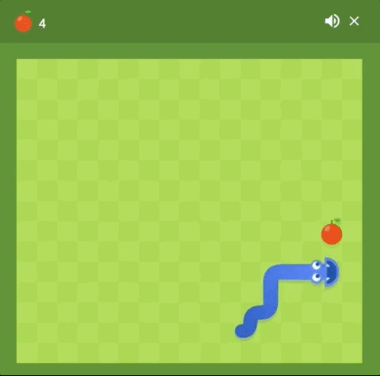
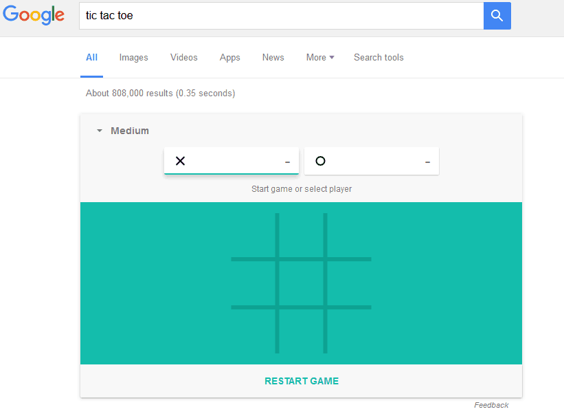
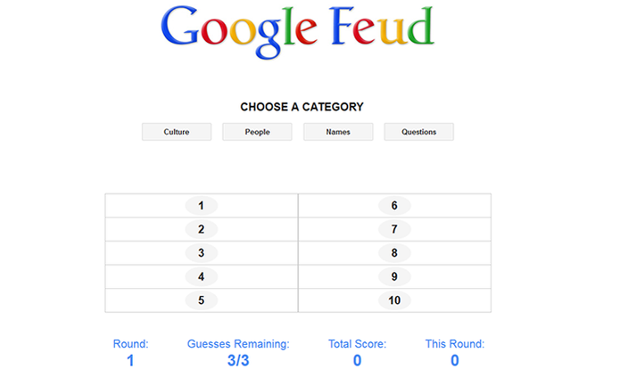

Outros Jogos Do Google
Snake

De acordo com o Google e os signos do zodíaco chinês, 2013 foi o ano da Cobra.
Para celebrar o Ano Novo Chinês, o clássico jogo da cobrinha regressou com algumas atualizações hilárias.
Em 60 segundos, faça essa cobrinha crescer comendo tudo o que aparecer pelo caminho.
(exceto os foguetes que podem machucar o pobre animal).
Trazer de volta as personalidades individuais dos fantasmas e até mesmo recriar os bugs originais dessa obra-prima de 1980.
T-Rex Run

Perdeu a conexão à Internet?
Então fique tranquilo porque até o seu roteador voltar ao normal, você pode brincar com um dinossauro.
Controle de um T-Rex, atravessando um deserto interminável e pulando por cima de cactos para não se machucar.
Outros Jogos Do Google
Tic-Tac-Toe (O Jogo da Velha)
O Jogo da Velha é desses jogos antigos que todo mundo já jogou.
Não precisa pegar um caderno para fazer a grelha, as cruzes e o círculo.
O Google trata desse assunto com essa versão super completa com três níveis de dificuldade e um modo para dois jogadores.
Google Feud
Google Feud é um jogo de adivinhação muito legal.
É muito simples, escolha uma categoria (pessoas, animais, esportes e outros assuntos) e complete a pesquisa.
Erre três vezes e você perde o jogo.
Vai ficar impressionado ou vai dar uma boa risada com os resultados reais das pesquisas?!